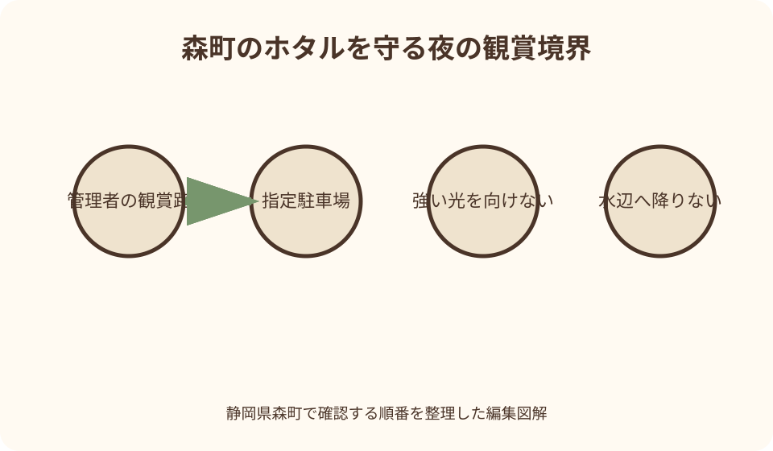
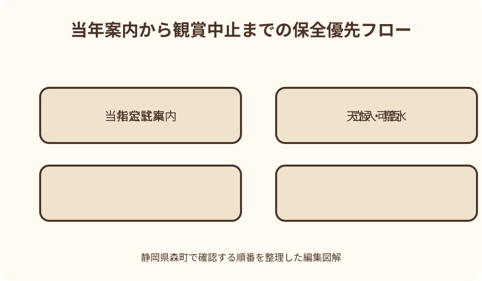

自然・環境保全｜最終確認 2026-08-10
静岡県森町のホタル観賞時期とマナー｜光・駐車・立入を保全から考える
森町のホタルを調べると、過去の町史や広報に生息地や観察会の記録が見つかります。しかし、昔記録された場所が現在も公開され、観賞者を受け入れているとは限りません。ホタルは天候や水辺環境で発生状況が変わり、夜間の細い道、私有地、農地、住宅地へ人と車が集まれば地域と生息環境に負担がかかります。本記事は場所を広げる案内ではなく、管理者が当年公開した観賞機会だけを選び、光、撮影、駐車、足元に配慮して静かに帰るための確認手順です。

編集イラスト場所探しより当年の受入案内を探す
ホタル観賞の最初の検索は、当年、公式、観賞会、立入可否を組み合わせます。森町公式、森町観光協会、地域や施設の管理者が発信した情報を優先します。
公式案内では開催日、受付、対象、駐車、雨天対応、禁止事項、連絡先を確認します。発生日だけが書かれ、来訪者向け案内がない情報は観賞の招待と受け取りません。
今年の案内が見つからないとき、前年イベントの日付や集合場所へ向かいません。終了、休止、保全上の非公開、道路事情など掲載されない理由があり得ます。
管理者が不明な水路や河川沿いは候補から外します。土地所有者へ突然連絡して入場を求めたり、近隣住民に生息場所を聞き回ったりしません。
過去の生息記録は現在の公開情報ではない
森町公式の図説町史には、ゲンジボタルが流水にすむことと、町内での過去の発生記録が掲載されています。森町の自然を知る資料として価値があります。
一方、町史の地名は調査・記録の文脈であり、現在の観賞場所一覧、駐車案内、立入許可ではありません。古い記録から位置を細かく割り出して訪ねません。
過去の広報には地域団体による放流や観察会の記事もありますが、その年の活動記録です。現在も団体が同じ日程と場所で受入れているとは判断できません。
生息情報を保存する目的と、多数の来訪者へ位置を知らせる目的は違います。本記事でも集落内の細かな地点、座標、駐車できそうな路肩を掲載しません。
観賞時期は初夏の一語から当日確認へ進む
ホタルは初夏の自然観察として知られますが、森町で見られる日を毎年同じ週に固定できません。気温、雨、水辺の状態などが年ごとに異なります。
観賞会が告知された場合は、その開催期間を発生保証ではなく受入可能な候補日として読みます。開催初日や週末が最盛期だと決めつけません。
出発当日は管理者の最新投稿や電話案内で、開催、中止、受付終了、駐車、足元を確認します。更新がなければ『予定どおり』と推測しません。
森町観光協会の年間行事ページは季節行事を知る入口ですが、現在の一覧にホタル観賞会が定例掲載されているとは確認できません。別の公式発表がない年は探訪を見送ります。

立入可否は道路・水辺・農地を別々に見る
公道から見える光があっても、水路脇、田畑の畦、林、住宅の敷地へ入れるとは限りません。柵がなくても私有地であり、暗闇で境界は見分けにくくなります。
管理者が示した観賞路と立入禁止区画を守ります。光を追って柵を越えたり、草地へ踏み込んだり、川岸へ降りたりしません。
農作業用の通路や橋は観賞者向け歩道ではありません。車両、用水、農作物を妨げず、案内された範囲から出ません。
子どもがホタルを追い始めたら、保護者は手の届く範囲で止めます。捕まえて近くで見る、持ち帰る、別の場所へ放す行為を観察に含めません。
駐車場が公式に示されない場所へ車で行かない
夜間の農道や集落道は、昼間に空いて見えても生活道路、緊急車両経路、農作業路です。路肩、橋のたもと、空き地を臨時駐車場と判断しません。
公式観賞会なら指定駐車場、利用時間、満車時の扱い、会場までの歩行経路を確認します。満車時に周辺を回って空き場所を探さず、帰る判断をします。
店舗、寺社、公共施設の駐車場が近くても、夜間観賞用に開放されているとは限りません。施設利用者でない車を無断で置きません。
送迎で短時間停車する場合も、対向車、歩行者、住宅の出入口を妨げます。管理者の乗降場所が示されない会場では、車での訪問を計画しません。
夜間交通は帰路から決める
森町の町なかと山間部では、道路幅、照明、携帯電波が変わります。行きの明るい時間に通れた道でも、帰りの暗さと雨で条件が変わります。
公共交通を使う場合、観賞終了後の列車やバスがあるかを事業者公式で確認します。最終便に間に合う想定を、観賞の長引きへ委ねません。
車の場合は、運転者が暗順応を失うほどスマートフォン画面を見続けないよう、帰路を先に設定します。走行中に発生情報を探し直しません。
眠気、雨、霧、道路規制があるときは観賞を中止します。ホタルのために危険な迂回路へ入らず、安全な場所から帰ります。

足元の安全と光害を両立させる
強い懐中電灯やスマートフォンライトを水面、草むら、ホタルへ向けません。観賞区域では管理者が示す消灯や減光の指示に従います。
足元確認が必要な区間は、歩く前に低い位置を短く照らし、他の観賞者や住宅へ光を向けません。色付きライトなら無条件に影響がないとは考えません。
暗い場所に目が慣れる前に歩き出さず、段差、側溝、水際を確認します。サンダルや滑りやすい靴を避け、両手が使える状態にします。
反射材は道路移動の安全に役立ちますが、観賞地点で光を反射する場合があります。道路区間と観賞区間で管理者の案内に合わせ、車から見える安全も失わないようにします。
撮影は記録より生息環境を優先する
カメラのフラッシュ、AF補助光、動画ライトを切ります。設定方法を現地で明るい画面を見ながら探さず、自宅で確認しておきます。
液晶画面は必要最小限の明るさにし、他の人や住宅へ向けません。撮影できなくてもライトを点けてホタルを探したり、枝を動かしたりしません。
三脚は暗闇の歩行者に見えにくく、通路を塞ぐ危険があります。管理者が明示的に認める場所だけで使い、混雑時は撮影自体をやめます。
写真の位置情報や背景から小さな生息地が特定される場合があります。投稿前に位置情報を外し、管理者が場所の拡散を控えるよう求めていれば従います。
静かさはホタルだけでなく住民への配慮
観賞地の近くに住宅がある場合、話し声、車のドア、アイドリング、音楽が夜の生活を乱します。到着前に家族で会話と乗降の方法を決めます。
ホタルが飛んだ瞬間に大声で呼び合わず、離れた家族をライトで招きません。静かに同じ場所で待ちます。
飲食、ごみ、喫煙は管理者のルールに従います。食べ物の包装や虫よけ用品を水辺へ落とさず、持ち込んだ物はすべて持ち帰ります。
近隣住民は案内係ではありません。駐車場所、発生場所、トイレを訪ねて玄関を回らず、公式連絡先で事前に確認します。
子連れは観賞時間より撤退条件を決める
子どもと行く場合は、暗闇、水路、車道、虫、夜更かしを考えます。保護者一人で複数の幼児を連れ、離れた場所から見守る計画は避けます。
服装は長袖、長いズボン、歩きやすい靴を基本にし、気温変化へ備えます。虫よけの使用は製品表示と管理者の案内に従い、水辺へ噴霧しません。
『一匹見るまで帰らない』と約束せず、駐車満車、雨、眠気、子どもの不安、足元不良のどれかで撤退すると先に伝えます。
トイレがない、または夜間閉鎖の場合があります。管理者の案内で確認し、近隣の私有地や店舗を無断で頼りません。
雨・風・増水を観賞条件と安全条件に分ける
ホタルの見え方は天候に左右されますが、雨上がりだから必ず多い、無風なら必ず飛ぶという予測はできません。当日の管理者情報を優先します。
小雨でも道、木道、草、石は滑ります。傘で視界と手が塞がる場合は歩かず、雨天中止の案内がなくても家族の安全から見送ります。
大雨の後は、水位、流れ、落石、倒木、土砂の危険が変わります。森町の防災情報と河川・道路情報を確認し、水辺へ近づきません。
風が強い、雷の可能性がある、警報や避難情報が出ている場合は観賞を中止します。屋外の自然観察を続ける理由にホタルを使いません。
発生が少ない夜に探し回らない
公式に観賞可能な日でも、ホタルが見られる保証はありません。到着して光が見えなければ、観賞路を何周も歩いたり、別の谷へ移動したりしません。
ライトを点けて草の中を探す、捕まえている人へ場所を聞く、SNSの当日投稿を追って車で移動する行為は、環境と住民への負担を広げます。
管理者が観賞終了時刻を示していれば、発生を待って延長しません。閉場、消灯、駐車場閉鎖の時刻より前に帰路へ入ります。
見られなかった夜も失敗として取り返そうとせず、公式な次回機会があれば改めて検討します。場所の追加探索をしないことも保全行動です。
見られない時の昼間の代案
ホタルが見られない代案は、別の生息地へ移動することではありません。明るい時間に森町の自然や町史を学べる公式施設・資料を確認します。
森町公式の図説町史にある動物のページは、ゲンジボタルと流水環境の関係を知る入口です。生息場所の訪問地図としてではなく学習資料として読みます。
観光協会の季節行事から、公開条件が明確な花、文化施設、まち歩き候補を探します。夜間の予定を昼間へ移せば、駐車や足元の負担も減らせます。
子どもとは、水辺のごみを持ち帰る、光を減らす、生き物を捕らない理由を話します。観賞できた数より、守る行動を家族の記録に残します。
『森ほたる』の行灯と生き物のホタルを区別する
森町の検索結果には、生き物のホタルとは別に、町なかへ行灯を置く『森ほたる』の活動が現れます。静岡県の景観賞ページも、夏の夜に軒先や玄関へ行灯を置く町並み活動として紹介しています。
行灯の開催情報を、ゲンジボタルの発生速報や自然観察会と読み替えません。名称、主催、会場、観賞対象を公式ページの本文で見分けます。
反対に、生き物を見られなかった夜の代案として行灯の催しを選ぶ場合も、その年の開催、公開時間、交通を当事者へ確認します。過去の景観賞記事は現在の開催保証ではありません。
検索結果で二つが混ざることを家族にも伝えます。『光を見る催し』という共通点だけで場所を移動せず、自然観察と町なかの催しを別々の公式案内で計画します。
良い点
森町公式の町史には、町内の自然とゲンジボタルの記録が残されています。ホタルを一夜の娯楽ではなく、流水と地域環境の一部として考える入口になります。
森町、観光協会、防災情報を組み合わせると、自然情報だけでなく観賞を見送る条件まで確認できます。夜の水辺ではこの組合せが重要です。
地域や施設が管理する観賞会が公式に開かれる場合、立入範囲、駐車、時間を来訪者と共有できます。個人で生息地を探すより環境負担を限定できます。
利点は、受入案内とマナーを守ったときに成り立ちます。自然が豊かという評価を、いつでもどこでも見られるという発生保証へ変えません。
注文したい点
過去の生息記録や観察会記事が検索上位に出る一方、当年の公開可否が分かりにくい場合があります。古いページには現在の来訪可否を明示する注記が望まれます。
公式観賞会を実施する場合は、発生数より先に、立入、駐車、ライト、撮影、満車、中止、トイレを一画面で案内すると無確認来訪を減らせます。
保全上、場所を広く公開しない判断も必要です。その場合は『非公開』『地域外の来訪を受け入れない』と示すことで、SNS探索を抑えられます。
観賞者側も情報が少ないことを不親切と決めつけず、生息環境を守るための制限として受け止めます。見つけた地点を公開して情報の空白を埋めません。
代案・結論
結論は、当年の管理者による受入案内がある場所だけを候補にし、過去の生息地を訪問先へ変えないことです。公式案内がなければ観賞を見送ります。
行く場合は、開催、立入、駐車、雨天、終了時刻を出発日に確認します。強い光、フラッシュ、捕獲、路上駐車、私有地進入をしません。
現地で見られなくても別地点へ移らず、決めた時刻に帰ります。昼間の町史や公開施設を代案にすれば、自然への関心を生息地の集中へつなげずに済みます。
今日できる行動は、古い地図を保存する代わりに、森町公式、観光協会、防災情報の三ページを登録し、『当年案内なしなら行かない』と家族メモへ書くことです。
大石の視点
私は、森町の自然を紹介するとき、不動産や観光の魅力を高めるために小さな生息地を公開するべきではないと考えます。静かな環境そのものが地域の財産です。
水路、農地、山林には所有者と管理者がいて、夜間の来訪は境界、農作業、生活道路へ影響します。柵がない土地を自由な観賞地として案内しません。
実家や土地の近くでホタルを見つけても、売却資料の呼び物として位置を掲載せず、外灯、水路管理、ごみ、草刈りを家族の実家カルテで整理します。
小さな不動産業者としてできるのは、自然を所有物の価値へ回収せず、道路と境界を守り、地域の公開ルールへ来訪者を戻すことです。見せない判断も誠実な地域紹介です。
観賞前の七項目チェック
一つ目から三つ目は、当年の開催、管理者、立入可能範囲です。この三点のどれかが不明なら、残りを調べても訪問しません。
四つ目と五つ目は、指定駐車場と帰路です。満車時の代案が『路肩』になっていないか、公共交通の帰りが残っているかを確認します。
六つ目は天候・防災、七つ目は光と撮影設定です。雨や増水なら中止し、フラッシュや補助光を自宅で切ります。
七項目がそろっても発生は保証されません。見られない可能性を家族全員が受け入れ、静かに待ち、予定時刻に帰れるときだけ参加します。
公式情報・確認先
掲載内容は次の一次情報を基礎に整理しました。営業、料金、催し、交通は変わるため、出発前または手続き前にリンク先で最新情報を確認してください。
- 森町の動物（静岡県森町、2026-08-10確認）
- 観光（静岡県森町、2026-08-10確認）
- 防災情報（静岡県森町、2026-08-10確認）
- 四季のイベント（静岡県森町観光協会、2026-08-10確認）
- 天方（ふじのくに美しく品格のある邑づくり連合、2026-08-10確認）
- ホタルやカワニナの環境保全を紹介する県記事（静岡県、2026-08-10確認）
- 自然観察や利用のマナー（静岡県、2026-08-10確認）
- 森蛍の会（静岡県、2026-08-10確認）
- 森町営バスのご案内（静岡県森町、2026-08-10確認）